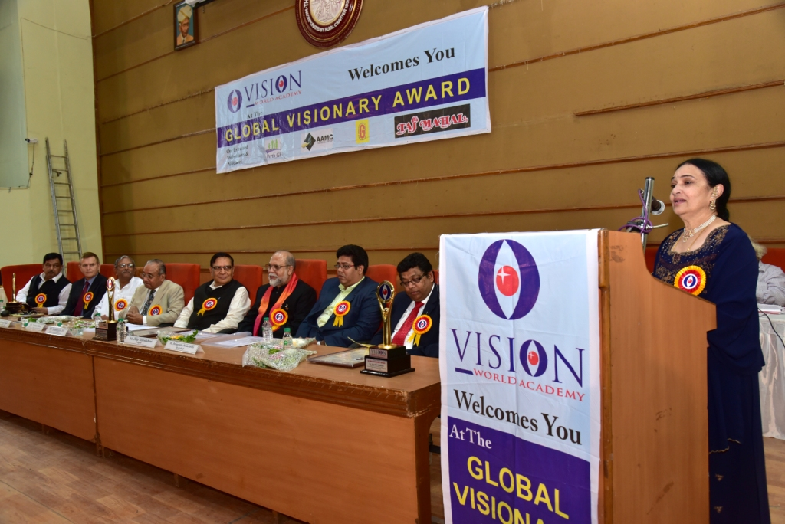

Events
2015 Writer's Digest Conference in New York City


DNA News Paper Publish
Receiving the Award in Global Visionary Award Presentation - 2015
Speech in Global Visionary Award Presentation - 2015
Recognising Visionaries

Global Visionary Award Presentation - 2015
'Bangalore IT Biz Conference' Ms Rathna Prasad was invited as a speaker for 'Bangalore IT Biz Conference'.
Ms Rathna Prasad, President & CFO of AKOS Health Systems, was invited as the chief guest at the Women's Day
celebration in
Sivananda Sarma Memorial RV [SSMRV] College, Bangalore.
Dr. Maheswara Prasad and Dr. Rathna Prasad from
AKOS Health Systems, New Jersey, USA, Delivered a lecture
on Effective
utilisation of hospital data for clinical research at the PGIMS.
AAP Conference in California on October 3rd, 2010